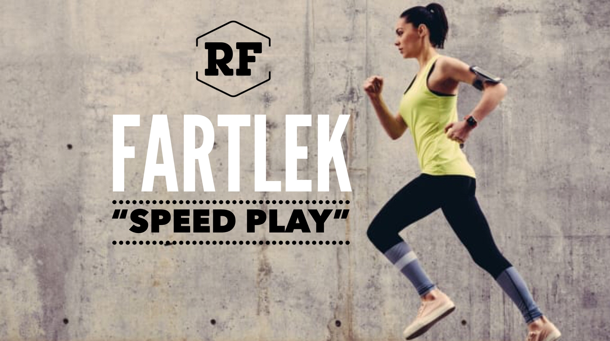

วิ่ง 3.5KM
Fartlek Runs เป็นการวิ่งแบบผสมผสานในการใช้ความเร็ว หลังจากวอร์มอัพเสร็จแล้ว ให้วิ่งด้วยเป็นเวลาสั้นๆ
แล้วตามด้วยการวิ่งง่ายๆเบาๆ คล้ายกับการวิ่งไปเล่นไป (speed play) การวิ่งลักษณะนี้คล้ายกับการวิ่งเทรล (Trail
Running) ที่ควบคุมความเร็วได้ยาก เนื่องจากมีสิ่งกีดขวางและสภาพพื้นผิวอาจเป็นเนินเขาหรือมีเศษหินขรุขระ
ทำให้ความเร็วในการวิ่งขึ้นอยู่กับการหลบหลีกระหว่างเส้นทาง

ประโยชน์จาก Fartlek:
เป็นการฝึกที่ปราศจากความกดดันเรื่องความเร็วและเวลา ทำให้เราสามารถวิ่งโดยโฟกัสที่ความสามารถและความแข็งแรงของร่างกายและจิตใจของเราเอง...